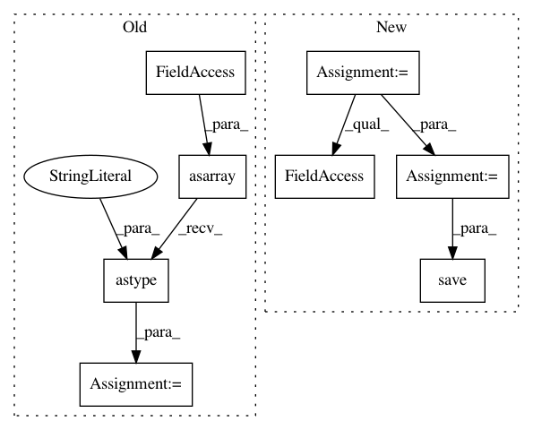

01d18e835815feedeac2fbeff8025cdd94128eaa,pynets/fmri/clustools.py,NilParcellate,create_clean_mask,#NilParcellate#,411
Before Change
// Load clustering mask
self._clust_mask_img = nib.load(self.clust_mask)
self._mask_data = np.asarray(self._clust_mask_img.dataobj).astype("bool").astype("uint8")
// Ensure mask does not inclue voxels outside of the brain
self._masked_fmri_vol = np.asarray(self._func_img.dataobj)[:, :, :, 0]
self._masked_fmri_vol = self._masked_fmri_vol.astype("bool")
After Change
".nii.gz")
// Load clustering mask
func_vol_img = index_img(self._func_img, 1)
clust_mask_res_img = resample_img(nib.load(self.clust_mask), target_affine=func_vol_img.affine,
target_shape=func_vol_img.shape, interpolation="nearest")
if self._mask_img is not None:
mask_res_img = compute_gray_matter_mask(resample_img(self._mask_img, target_affine=func_vol_img.affine,
target_shape=func_vol_img.shape,
interpolation="nearest"))
self._clust_mask_corr_img = intersect_masks([math_img("img > 0", img=func_vol_img),
math_img("img > 0", img=clust_mask_res_img),
math_img("img > 0", img=mask_res_img)],
threshold=1, connected=False)
self._mask_img.uncache()
mask_res_img.uncache()
else:
self._clust_mask_corr_img = intersect_masks([math_img("img > 0", img=func_vol_img),
math_img("img > 0", img=clust_mask_res_img)],
threshold=1, connected=False)
nib.save(self._clust_mask_corr_img, "%s%s%s%s" % (self._dir_path, "/", mask_name, ".nii"))
func_vol_img.uncache()
clust_mask_res_img.uncache()
gc.collect()
In pattern: SUPERPATTERN
Frequency: 3
Non-data size: 8
Instances
Project Name: dPys/PyNets
Commit Name: 01d18e835815feedeac2fbeff8025cdd94128eaa
Time: 2019-12-09
Author: dpisner@utexas.edu
File Name: pynets/fmri/clustools.py
Class Name: NilParcellate
Method Name: create_clean_mask
Project Name: dPys/PyNets
Commit Name: 7dc35cbcb7d12dc1dc11688f22bb0ddda393847d
Time: 2020-08-12
Author: dpisner@utexas.edu
File Name: tests/test_track.py
Class Name:
Method Name: test_track_ensemble
Project Name: dPys/PyNets
Commit Name: 7dc35cbcb7d12dc1dc11688f22bb0ddda393847d
Time: 2020-08-12
Author: dpisner@utexas.edu
File Name: tests/test_track.py
Class Name:
Method Name: test_track_ensemble_particle